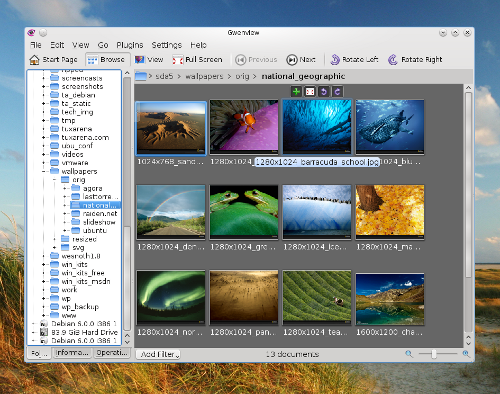

Пять лучших программ для просмотра изображений в Ubuntu/Kubuntu
Оригинал: Top 5 Image Viewers for Ubuntu/Kubuntu
Автор: Craciun Dan
Дата публикации: 20 февраля 2011 года
Перевод: А.Кривошей
Дата перевода: май 2011 г.
В данной статье описаны пять программ для просмотра изображений, доступных в настоящее время в Ubuntu. Кроме того, вкратце дана информация о программах, которые по тем или иным причинам официально не поддерживаются.
Gwenview
По моему мнению Gwenview, вероятно, лучший графический вьювер среди имеющихся в наличии на настоящий момент. Созданный для KDE4, Gwenview поддерживет практически все имеющиеся форматы изображений, имеет базовые инструменты редактирования фотографий, файловый браузер, поддерживает теги, создание миниатюр для предпросмотра, обрезку, выставление рейтингов фотографиям, слайдшоу, полноэкранный режим, плагины, а также имеет два режима просмотра (просмотр папки и просмотр изображения).
Установка:
$ sudo apt-get install gwenview

Eye of GNOME
Eye of GNOME - это программа для просмотра изображений, включенная по умолчанию в графическую среду GNOME. Она поддерживает множество форматов файлов (включая JPG, PNG, BMP, GIF, SVG, TGA, TIFF или XPM), имеет простой интерфейс. Возможности программы включают режим слайдшоу, масштабирование, полноэкранный режим, миниатюры для предпросмотра, автоматическую ориентацию и поддержку плагинов.
Установка:
$ sudo apt-get install eog
gThumb
gThumb - это еще один вьювер на основе GTK, имеющий несколько замечательных функций, большинство из которых подключаются в виде расширений. Вышеуказанные функции включают импорт фотографий из Picasa или Flickr, экспорт в Facebook, Flickr, Photobucker, Picasa или в локальную папку, миниатюры для предпросмотра, поддержка слайдшоу, файловый браузер, закладки, фильтры.
Установка:
$ sudo apt-get install gthumb
Viewnior
Viewnior - это минималистичный вьювер, написанный на GTK+ с поддержкой базовых функций, таких как поворот и изменение размеров изображений, полноэкранный режим, сохранение изображений в форматах JPG и PNG, режим слайдшоу и обрезка фотографий.
Установка:
$ sudo apt-get install viewnior
gPicView
gPicView - это программа для просмотра изображений, включенная по умолчанию в состав графической среды LXDE, с компактным интерфейсом (панель инструментов размещена в нижней части экрана, панель меню отсутствует и все функции доступны в контекстном меню по клику правой кнопки мыши). Возможности gPicView включают полноэкранный режим, поворот/переворот изображения и сохранение в форматах JPG, TIFF, BMP, PNG и ICO.
$ sudo apt-get install gpicview
Я также должен кратко упомянуть несколько программ, которые, как мне кажется, больше не поддерживаются (последние релизы некоторых из них вышли несколько лет назад,другие доступны только для KDE3, и т.д.). Это:
KSquirrel - это мощный вьювер для KDE3 с поддержкой миниатюр, плагинов KIPI, файловым браузером и обычными функциями, такими как поворот и масштабирование изображений.
QIV или Quick Image Viewer - программа с простым интерфейсом и минимальным набором функций, таких как масштабирование, гамма-коррекция, настройка яркости и контрастности, с поддержкой режима слайдшоу.
GImageView - хотя последний релиз датируется 2004 годом, программа использует GTK+ и вполне может использоваться. Она имеет встроенный файловый браузер, поддерживает миниатюры, вкладки, поворот/масштабирование изображений, легко настраивается.
GQview - снова вьювер на базе GTK+ с минималистичным интерфейсом, файловым браузером и стандартным набором функций.
KuickShow - этот вьювер на базе KDE3 может похвастаться встроенным файловым менеджером, базовыми функциями для редактирования изображений и хорошо настраиваемым интерфейсом.
Примечания редактора
1. Автор не совсем прав, утверждая, что перечисленные в конце статьи программы уже не поддерживаются. По крайней мере последняя версия QIV датирована 02.05.2011. Остальные четыре, действительно, уже давно не обновляются.
2. Перечень программ, предназначенных для просмотра изображений, значительно шире, нежели обозначено в этой статье. Поскольку автор рассматривал только программы для Ubuntu, за рамками статьи оказались такие широко известные просмотрщики, как digiKam, F-Spot, Shotwell и Xnview. Кроме того, совсем не упомянуты программы, запускающиеся из консоли. Более полный перечень программ для просмотра изображений вы найдете в разделе "Мультимедиа" сайта "Путеводитель по программному обеспечению для Linux". Там вы сможете дать вашу оценку самым лучшим программам этой (и других) категорий, а также добавить описание программы, которой еще нет в каталоге.
Если вам понравилась статья, поделитесь ею с друзьями: